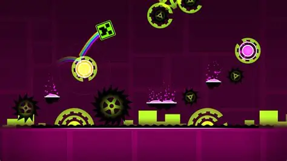

Este proyecto está desarrollado con Angular y cuenta con varios componentes como Plantilla, Validación, Reactivos y Herencia. Su objetivo es demostrar la estructura modular y la interacción entre componentes dentro de un entorno moderno.